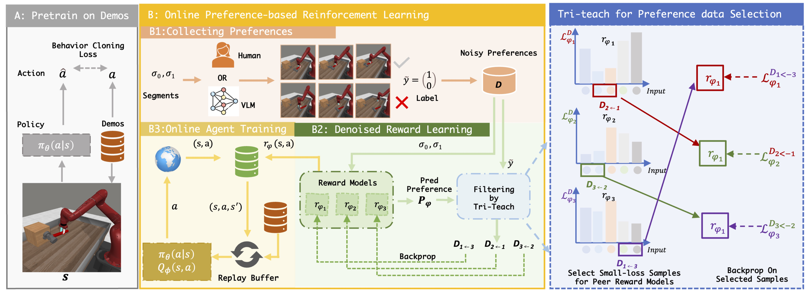
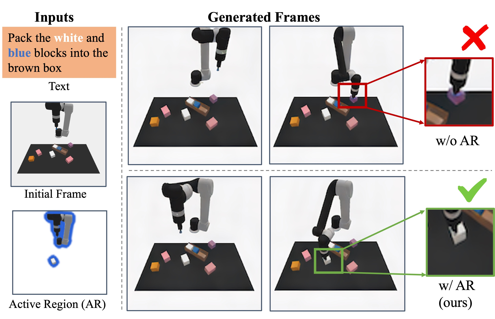

|
Mara Levy I am a PhD student in the Computer Science department at the University of Maryland, College Park. I work on robotic learning and computer vision with Abhinav Shrivastava. I graduated Summa Cum Laude from the University of Pennsylvania where I majored in Computer Science and minored in Mathematics. |
{kind=link}
ResearchMy research utilizes a mixture of computer vision and robotics approaches to try and make robots more useful in the real world. Currently I am interested in how robots can learn from a very small number of demonstrations. In the long term I am interested in using these techniques to learn from online videos of humans. These learned skills can then be combined for long term planning. |

|
P3-PO: Prescriptive Point Priors for Visuo-Spatial Generalization of Robot Policies
Mara Levy, Siddhant Haldar, Lerrel Pinto, Abhinav Shrivastava IEEE International Conference on Robotics and Automation (ICRA), 2025 Using keypoints to train generalized robot policies on a wide variety of robotics tasks. Project / Paper / Video / arXiv / Code |
|

|
TREND: Tri-teaching for Robust Preference-based Reinforcement Learning with Demonstrations
Shuaiyi Huang, Mara Levy, Anubhav Gupta, Daniel Ekpo, Ruijie Zheng, Abhinav Shrivastava IEEE International Conference on Robotics and Automation (ICRA), 2025 A novel framework that integrates few-shot expert demonstrations with a tri-teaching strategy for effective noise mitigation in preference based reinforcement learning. Paper |

|
VeriGraph: Scene Graphs for Execution Verifiable Robot Planning
Daniel Ekpo, Mara Levy, Saksham Suri, Chuong Huynh, Abhinav Shrivastava Under Submission This approach generates a scene graph from input images and uses it to iteratively check and correct action sequences generated by an LLM-based task planner. Paper / arXiv |

|
NeRF-Aug: Data Augmentation for Robotics\\with Neural Radiance Fields
Eric Zhu, Mara Levy, Matthew Gwilliam, Abhinav Shrivastava Under Submission A novel method that is capable of teaching a policy to interact with objects that are not present in the dataset through the use of NERF based scene augmentation. Project / Paper / arXiv |
|

|
ARDuP: Active Region Video Diffusion for Universal Policies
Shuaiyi Huang, Mara Levy, Zhenyu Jiang, Anima Anandkumar, Yuke Zhua, Linxi Fan, De-An Huang, Abhinav Shrivastava International Conference on Intelligent Robots and Systems (IROS), 2024 A novel method for learning complex goal-conditioned robotics tasks from a single demonstration, using unique reward function and knowledge expansion. Paper / arXiv |
|
|
WayEx: Waypoint Exploration using a Single demonstration
Mara Levy, Nirat Saini, Abhinav Shrivastava IEEE International Conference on Robotics and Automation (ICRA), 2024 A novel method for learning complex goal-conditioned robotics tasks from a single demonstration, using unique reward function and knowledge expansion. Project / Paper / arXiv |
|
|
V-VIPE: Variational View Invariant Pose Embedding
Mara Levy, Abhinav Shrivastava Conference on Computer Vision and Pattern Recognition (CVPR) RHOBIN Workshop, 2024 A method for projecting poses into an embedding space that is view invariant. This means the same pose shot from different camera angles should have an equal embedding. Paper / arXiv |
|
|
Coarse-to-Fine Human Mesh Recovery with Transformers
Vatsal Agarwal, Mara Levy, Max Ehrlich, Youbao Tang, Ning Zhang, Abhinav Shrivastava International Conference on Computer Vision (ICCV) T-CAP Workshop, 2024 Build efficient Transformer design for non-parametric human mesh recovery with coarse-to-fine pipeline. Paper |
|
|
No-frills Dynamic Planning using Static Planners
Mara Levy, Vasista Ayyagari, Abhinav Shrivastava IEEE International Conference on Robotics and Automation (ICRA), 2021 A planning algorithm that helps reinforcement learning algorithms that can typically only solve tasks for static objects solve the same task, but with a dynamic object. Project / Paper / arXiv |
|
Template Credits Jon Barron |